EXHAUST MANIFOLD W/ TURBOCHARGER > INSTALLATION |
| 1. INSTALL NO. 2 INLET TURBO OIL PIPE SUB-ASSEMBLY (for Bank 2) |
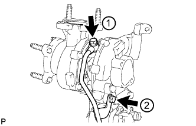 |
Temporarily install a new gasket and the No. 2 inlet turbo oil pipe with the union bolt and bolt.
Tighten the union bolt and bolt in the order shown in the illustration.
| 2. INSTALL NO. 2 TURBO OIL PIPE (for Bank 2) |
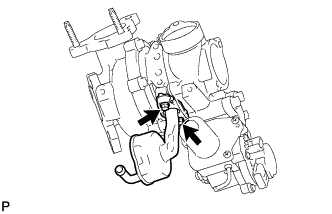 |
Install a new gasket and the No. 2 turbo oil pipe with the 2 bolts.
| 3. INSTALL NO. 2 INLET COMPRESSOR ELBOW (for Bank 2) |
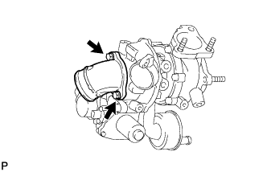 |
Install a new gasket and the No. 2 inlet compressor elbow with the 2 bolts.
| 4. INSTALL NO. 2 TURBOCHARGER SUB-ASSEMBLY WITH EXHAUST MANIFOLD LH (for Bank 2) |
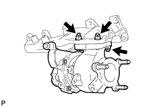 |
Set a new gasket to the No. 2 turbocharger.
Install the exhaust manifold LH to the No. 2 turbocharger with 3 new nuts.
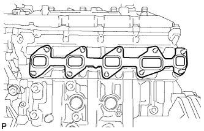 |
Set a new gasket to the cylinder head LH.
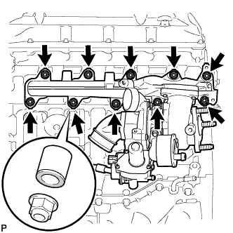 |
Install the No. 2 turbocharger with exhaust manifold LH and 10 collars to the cylinder head LH with 10 new nuts.
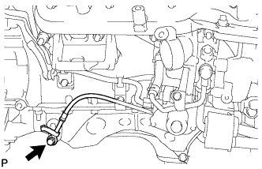 |
Install a new gasket and the No. 2 inlet turbo oil pipe to the No. 1 oil pan with the union bolt.
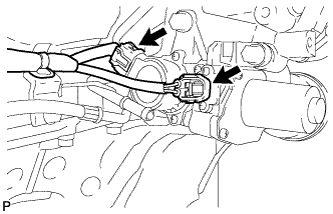 |
Connect the 2 connectors to the turbocharger.
| 5. INSTALL NO. 2 VENTILATION TUBE SUB-ASSEMBLY (for Bank 2) |
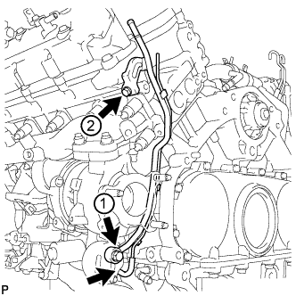 |
Temporarily install a new gasket and the No. 2 ventilation tube with the union bolt and bolt.
Tighten the union bolt and bolt in the order shown in the illustration.
Connect the No. 2 vacuum transmitting hose.
| 6. INSTALL NO. 2 TURBOCHARGER STAY (for Bank 2) |
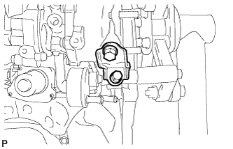 |
Install the No. 2 turbocharger stay with the 2 bolts.
| 7. CONNECT NO. 2 OUTLET TURBO OIL HOSE (for Bank 2) |
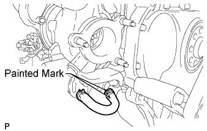 |
| 8. INSTALL NO. 2 TURBO WATER PIPE SUB-ASSEMBLY (for Bank 2) |
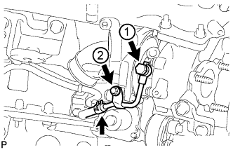 |
Temporarily install a new gasket and the No. 2 turbo water pipe with the union bolt and bolt.
Tighten the union bolt and bolt in the order shown in the illustration.
Connect the water hose to the pipe.
| 9. INSTALL FRONT WATER BY-PASS JOINT (for Bank 2) |
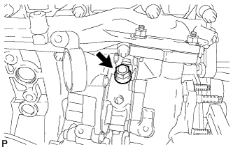 |
Install a new gasket and the front water by-pass joint.
| 10. INSTALL NO. 3 TURBO WATER PIPE SUB-ASSEMBLY (for Bank 2) |
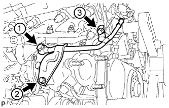 |
Temporarily install a new gasket and the No. 3 turbo water pipe with the union bolt and 2 bolts.
Tighten the union bolt and 2 bolts in the order shown in the illustration.
| 11. INSTALL NO. 2 EXHAUST MANIFOLD HEAT INSULATOR (for Bank 2) |
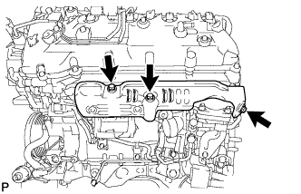 |
Install the No. 2 exhaust manifold heat insulator with the 3 bolts.
| 12. CONNECT NO. 2 TURBO WATER HOSE (for Bank 2) |
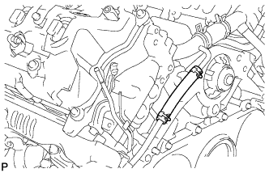 |
| 13. CONNECT BREATHER PLUG LH (for Bank 2) |
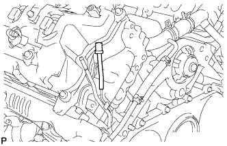 |
| 14. CONNECT NO. 3 VENTILATION HOSE (for Bank 2) |
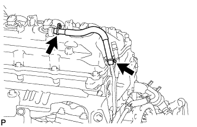 |
| 15. INSTALL NO. 1 INLET TURBO OIL PIPE SUB-ASSEMBLY (for Bank 1) |
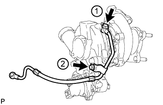 |
Temporarily install a new gasket and the No. 1 inlet turbo oil pipe with the union bolt and bolt.
Tighten the union bolt and bolt in the order shown in the illustration.
| 16. INSTALL NO. 1 TURBO OIL PIPE (for Bank 1) |
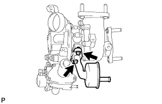 |
Install a new gasket and the No. 1 turbo oil pipe with the 2 bolts.
| 17. INSTALL NO. 1 INLET COMPRESSOR ELBOW (for Bank 1) |
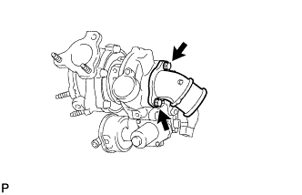 |
Install a new gasket and the No. 1 inlet compressor elbow with the 2 bolts.
| 18. INSTALL NO. 1 TURBOCHARGER SUB-ASSEMBLY WITH EXHAUST MANIFOLD RH (for Bank 1) |
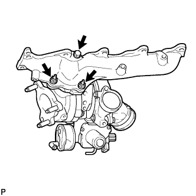 |
Set a new gasket to the No. 1 turbocharger.
Install the exhaust manifold RH to the No. 1 turbocharger with 2 new nuts and the bolt.
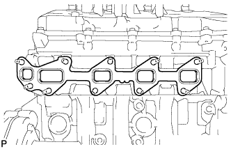 |
Set a new gasket to the cylinder head RH.
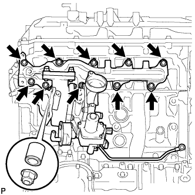 |
Install the No. 1 turbocharger with exhaust manifold RH to the cylinder head RH with the 10 collars and 10 new nuts.
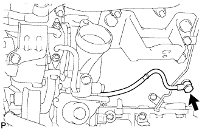 |
Install a new gasket and the No. 1 inlet turbo oil pipe to the cylinder block with the union bolt.
| 19. INSTALL NO. 1 VENTILATION TUBE SUB-ASSEMBLY (for Bank 1) |
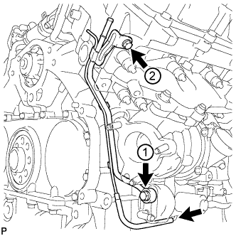 |
Temporarily install a new gasket and the No. 1 ventilation tube with the union bolt and bolt.
Tighten the union bolt and bolt in the order shown in the illustration.
Connect the vacuum hose.
| 20. INSTALL NO. 1 TURBOCHARGER STAY (for Bank 1) |
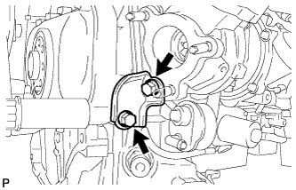 |
Temporarily install the No. 1 turbocharger stay with the 2 bolts.
Tighten the 2 bolts.
| 21. INSTALL NO. 1 TURBO WATER PIPE SUB-ASSEMBLY (for Bank 1) |
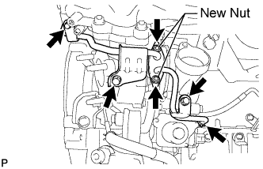 |
Install a new gasket and the No. 1 turbo water pipe with 2 new nuts and 3 bolts.
Connect the water hose.
| 22. CONNECT NO. 1 OUTLET TURBO OIL HOSE (for Bank 1) |
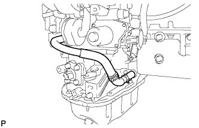 |
| 23. INSTALL NO. 1 EXHAUST MANIFOLD HEAT INSULATOR (for Bank 1) |
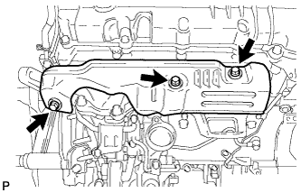 |
Install the No. 1 exhaust manifold heat insulator with the 3 bolts.
| 24. CONNECT NO. 2 TURBO WATER HOSE (for Bank 1) |
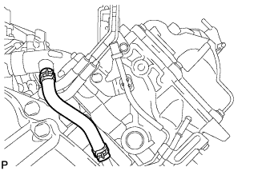 |
| 25. CONNECT BREATHER PLUG RH (for Bank 1) |
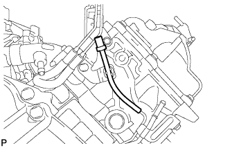 |
| 26. CONNECT NO. 2 VENTILATION HOSE (for Bank 1) |
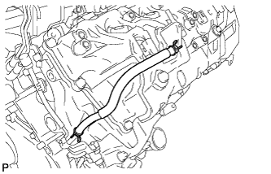 |
| 27. INSTALL NO. 1 INTAKE AIR CONNECTOR PIPE (for Bank 1) |
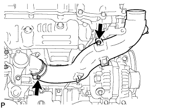 |
Install the No. 1 intake air connector pipe with the bolt. Then tighten the hose clamp.
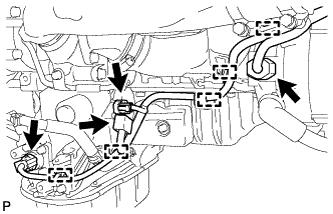 |
Connect the 4 connectors and attach the 5 wire harness clamps.
| 28. INSTALL NO. 1 ENGINE OIL LEVEL DIPSTICK GUIDE (for Bank 1) |
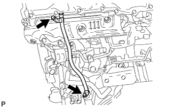 |
Apply a light coat of engine oil to a new O-ring and install it to the No. 1 engine oil level dipstick guide.
Install the No. 1 engine oil level dipstick guide with the 2 bolts.
| 29. INSTALL ENGINE ASSEMBLY |
Install the engine assembly to the vehicle (Click here).
| 30. INSPECT FOR OIL LEAK |
| 31. INSPECT FOR COOLANT LEAK |
| 32. CHECK ENGINE OIL LEVEL |
| 33. CONNECT CABLE TO NEGATIVE BATTERY TERMINAL |
Connect the cables to negative (-) main battery and sub-battery terminals.